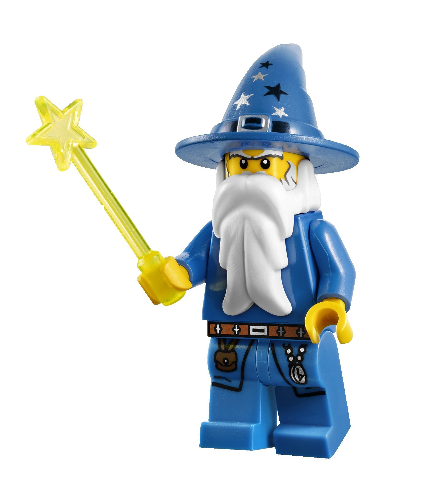

What I Hope to Learn at The Iron Yard
(aka "Some of my mega epic goals for a totally excellent adventure")

And thus concludes my first full, official day at The Iron Yard. To say that I'm excited would be a major understatement. That said, over the past several months, I've been thinking about some goals.
But first...
WHY coding?
- You're basically a wizard. A digital wizard.
- The more difficult it is, the more rewarding it becomes. (I mean, it's such a great feeling when you FINALLY get something to work)
- You can pretend to be Neo. (Guess which Terminal color scheme I picked)
I have numerous goals right now, but here are some of the big ones.
Goals
- Immediate/Short-Term
- Establish a strong foundation to build upon for the rest of my life.
- Getting reacquainted with being in a classroom environment again. I graduated from college in 2010, so I've not been in a classroom for quite some time.
- Develop group skills and become a strong team member. (NOTE: This is also a long-term goal/project)
- Not fry my laptop while using the Terminal.
- Long-Term
- Become a full-stack developer.
- Teach others to code.
- Create innovative and useful websites for clients who would otherwise not get much attention.
- Not fry my laptop while using the Terminal.
(I am super excited!!)